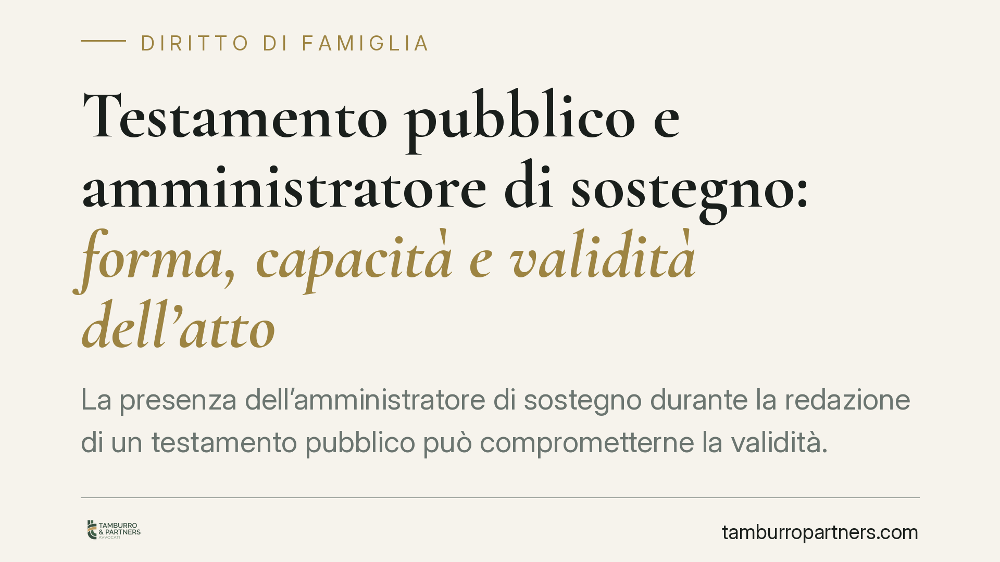

Testamento pubblico e amministratore di sostegno: forma, capacità e validità dell'atto
La presenza dell'amministratore di sostegno durante la redazione di un testamento pubblico può comprometterne la validità. Il tema tocca due piani distinti: le forme rigide dell'atto notarile e la capacità del disponente di testare. Distinguerli è essenziale, perché l'amministrazione di sostegno non equivale, di per sé, a incapacità testamentaria. Vediamo cosa prevede la legge e quali cautele adottare.

Il caso e i due piani da non confondere
Quando una persona è assistita da un amministratore di sostegno e decide di fare testamento pubblico, sorge una domanda ricorrente: la partecipazione o la presenza dell'amministratore all'atto ne pregiudica la validità?
Per rispondere occorre tenere separati due profili che spesso vengono sovrapposti.
Il primo è il piano della forma: il testamento pubblico è un atto rigidamente disciplinato, che ammette la presenza solo dei soggetti previsti dalla legge (il notaio, i testimoni e il testatore). Ogni altra presenza che interferisca con la libera formazione della volontà è problematica.
Il secondo è il piano della capacità di testare: la nomina di un amministratore di sostegno non priva automaticamente la persona della facoltà di disporre per testamento. Sono cose diverse.
Inquadramento normativo
L'art. 603 c.c. disciplina la formazione del testamento pubblico: il testatore dichiara al notaio la propria volontà alla presenza di due testimoni; il notaio la riduce per iscritto e ne dà lettura; l'atto reca l'indicazione del luogo, della data e dell'ora della sottoscrizione. È una sequenza tassativa, pensata per garantire che la volontà espressa sia genuina e non condizionata.
Sul versante dell'amministrazione di sostegno, l'art. 411 c.c. estende all'amministratore alcuni divieti previsti per il tutore. In particolare, il beneficiario non può disporre per testamento a favore dell'amministratore di sostegno che ne cura gli interessi, richiamando i limiti dettati dagli artt. 596 e 599 c.c. in tema di incapacità a ricevere. La ratio è chiara: evitare che chi assiste una persona in condizione di fragilità possa trarne un indebito vantaggio successorio.
È bene però ribadire che l'esistenza di un decreto di nomina non incide, in sé, sulla capacità di testare: questa va accertata in concreto al momento dell'atto.
La qualificazione del vizio: nullità o annullabilità?
Secondo un orientamento, la presenza dell'amministratore di sostegno nel corso della redazione del testamento pubblico può determinare un vizio dell'atto, per contrasto con le forme imperative dell'art. 603 c.c. Su questa base si sostiene che nemmeno un'eventuale autorizzazione del giudice tutelare potrebbe sanare l'irregolarità, trattandosi di forme non derogabili.
La qualificazione precisa del vizio, tuttavia, non è pacifica. L'art. 606, comma 1, c.c. sanziona con la nullità i difetti più gravi, ossia la mancanza di redazione per iscritto e la mancanza di sottoscrizione. Le altre violazioni delle formalità danno luogo, ai sensi del comma 2, alla sola annullabilità, azionabile entro termini più stringenti e da soggetti determinati.
Ricondurre la presenza dell'amministratore all'una o all'altra categoria ha conseguenze pratiche rilevanti, sia in termini di legittimazione ad agire sia di termini di impugnazione. Per questo la questione va valutata con cautela.
*Nota di trasparenza: la sintesi da cui muove questo contributo fa riferimento a una pronuncia della Corte di Cassazione i cui estremi non risultano allo stato verificabili con certezza. In attesa di riscontro sul testo integrale della decisione, le considerazioni sulla qualificazione del vizio vanno intese come ricostruzione di orientamenti e non come applicazione di un precedente definitivamente accertato.*
Implicazioni pratiche
Per chi assiste una persona beneficiaria di amministrazione di sostegno, o per la persona stessa che intende testare, i punti di attenzione sono essenzialmente tre.
Primo: la volontà di disporre per testamento resta un atto strettamente personale. L'amministratore non può sostituirsi al beneficiario né partecipare alla formazione dell'atto.
Secondo: il testamento a favore dell'amministratore è colpito dalle incapacità a ricevere richiamate dall'art. 411 c.c.; una disposizione di questo tipo è destinata a essere contestata.
Terzo: eventuali dubbi sulla capacità del disponente vanno affrontati prima dell'atto, non dopo, per evitare contenziosi tra eredi.
Cosa fare in concreto
- Leggete il decreto del giudice tutelare e verificate l'esatta estensione dei poteri dell'amministratore: raramente comprendono profili testamentari, che restano personalissimi.
- Accertate la capacità di testare al momento dell'atto, acquisendo una certificazione medica aggiornata quando la condizione del disponente lo suggerisca.
- Escludete la presenza dell'amministratore durante la redazione del testamento pubblico e curate che siano presenti solo i soggetti previsti dall'art. 603 c.c.
- Verificate le menzioni obbligatorie dell'atto: dichiarazione al notaio, presenza dei testimoni, lettura, indicazione di luogo, data e ora, sottoscrizioni.
- Se un testamento già redatto presenta il profilo di irregolarità qui descritto, è opportuno farne valutare la validità prima che si aprano contestazioni successorie.
Contributo informativo a cura di Tamburro & Partners Avvocati - Avv. Giuseppe Tamburro. Non costituisce parere legale.
Ogni famiglia ha il suo equilibrio.
Separazione, divorzio, affidamento, assegno: se vuoi un confronto riservato su una specifica situazione, scrivi allo studio. Ti rispondiamo entro un giorno lavorativo.